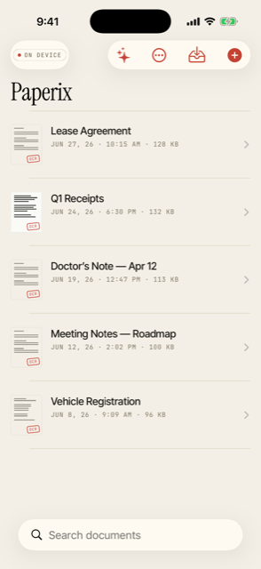
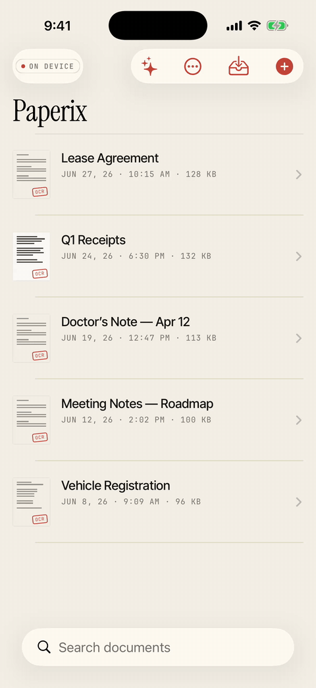
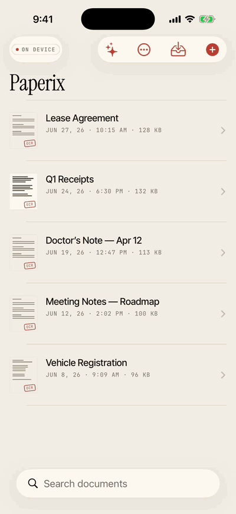
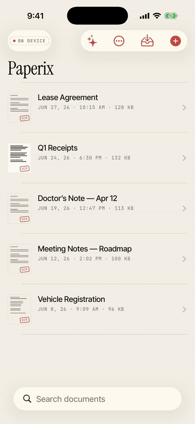
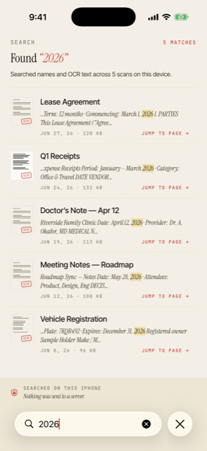
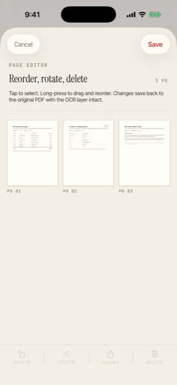
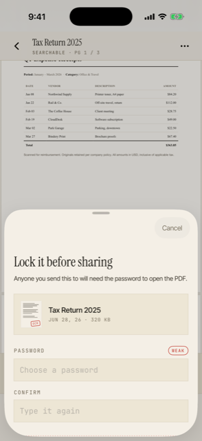
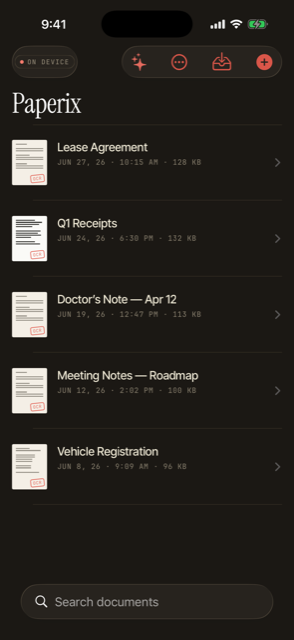

Scan, search,
and ask.
Paperix turns paper into searchable PDFs, then lets you summarize any scan or ask questions across your whole library — every step on your device. No accounts, no cloud, no analytics, no tracking.

See it work



recorded on the iPhone 17 Pro simulator with seeded scans — capture itself uses the device camera
What it does
Edge-aware scanning
Apple's Vision document camera — the engine Notes uses. Auto edge-detection, perspective correction, shadow cleanup. Import from Photos or Files too.
On-device OCR
Every scan is run through text recognition and the words are embedded as an invisible PDF layer — searchable here, and in any other reader.
Full-text search
Search across every scan, or inside one. By name or by content. Tap a result to jump to that page with the match highlighted.
Analyze with on-device AI
Open any scan for an AI summary, key points, and a follow-up Q&A — powered by Apple Intelligence on your iPhone's Neural Engine. Streams in seconds.
Ask across your library
Ask a question in plain language and get an answer pulled from every scan, with tappable citations back to the source page. Ranked by meaning, not keywords.
Page editor
Reorder, rotate, or delete pages after the fact. Changes save back to the original PDF with the OCR layer intact.
Password-protected export
Export a sensitive scan with PDFKit encryption. The recipient needs the password to open it; Paperix never stores or transmits it.
Zero networking
The binary has no code to phone home. Turn airplane mode on forever and Paperix works exactly the same. Not "encrypted in transit" — no transit.
Every screen, on device




Why no SDKs?
Most "free" scanner apps make money by sending your scans, your text, your behavior, or your contacts somewhere. The business model is: you upload your tax documents and someone downstream gets paid.
Paperix takes a different approach. It's a one-time purchase, it has no servers, and it has no third-party SDKs — not analytics, not crash reporters, not advertising IDs. The binary you install is the binary that runs. There is no live wire back to anyone.
This is easy to claim and hard to prove — so prove it. Run Paperix with Little Snitch or Lulu in alert mode. It will never prompt, because it never tries to connect. The same goes for the AI: every summary, key point, and answer is generated on the Neural Engine and stamped “on device — nothing was sent to a server.”
Get Paperix
Paperix is on the App Store — a one-time purchase, no subscription, no accounts. It runs on iPhone and iPad. AI features need Apple Intelligence (iPhone 15 Pro and later, or an M-series iPad); everything else works on iOS 16+.